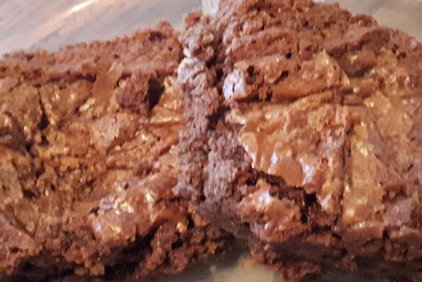

Brownies

Description
The best brownies iv'e ever had! A delicious recipe for making choclate brownies. Easy to follow instructions for a delicious homeade treat that will melt in your mouth.
Ingredients
- 1⁄2 cup of white sugar
- 2 tablespoons butter
- 11⁄2 cups semisweet choclate chips
- 2 eggs
- 1⁄2 teaspoon vanilla extract
- 2⁄3 cup all purpose flour
- 1⁄4 teaspoon baking soda
- 1⁄2 teaspoon salt
Steps
- preheat the oven to 325 degrees F(165 degrees C). Greese an 8x8 inch square pan.
- In a medium saucepan, combine the sugar, butter and water. Cook over medium heat until boiling. Remove from heat and stir in choclate chips until melted and smooth. Mix in the eggs and vanilla. Combine the flour, baking soda and salt; stir into the chocolate mixture. Stir evenly into the prepared pan.
- Bake for 25 to 30 minutes in the preheated oven, until brownies set up. Do not overbake! Cool in pan and cut into squares.